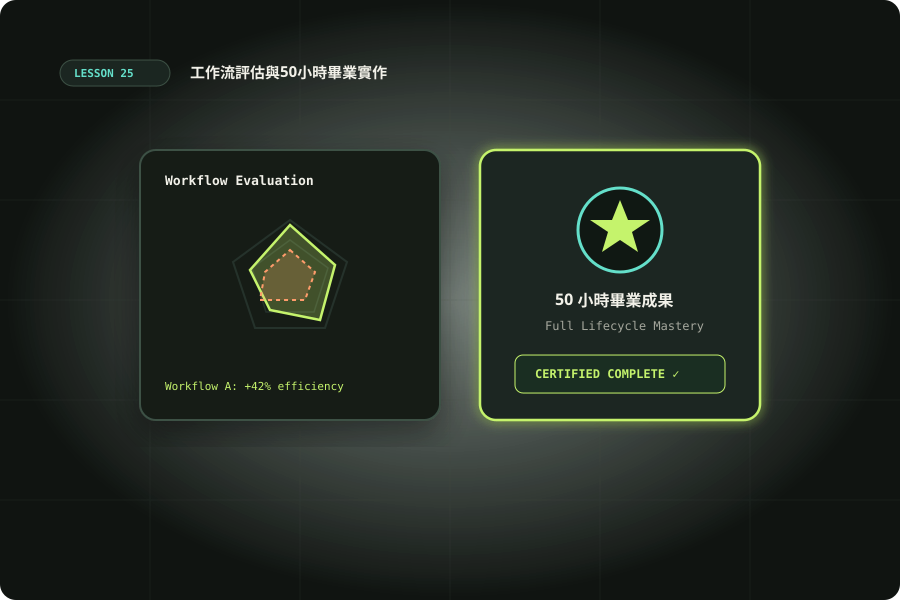

工作流評估與50小時畢業實作
比較提示與工作流，核對證據，交付具恢復能力的完整流程。

準備與學習成果
開始前準備
- 完成20–24；Python3.10+；A/B模型執行可選
完成後你能
- 分開記錄觸發/邊界/格式/品質
- 驗證資料報告並偵測過期結果
- 交付含失敗與恢復證據的畢業包
兩小時實作安排
時間包含閱讀、操作、修正與驗收；不是純閱讀時間，也不是工具執行時間保證。
把深度使用轉成可以評估的成果
50小時最後一課不再加一個工具，而是檢查你能否交付可重跑、可恢復、有證據的Codex流程。沿用第20課合成CSV與資料報告，不需要新服務或模型費用。第21課提供批次觀念，第22課記錄執行配置，第23課留交接，第24課把固定檢查變成可重用能力。評估分成觸發、邊界、格式與品質：选對Skill仍可能答錯，格式正確仍可能越權，內容正確卻無法追溯也未完成交接。先寫每項預期與證據位置，再開始工作。離線成果能驗證程式與契約，不能替你測模型選擇或推論效果；本課以null明確保留這個差別。
固定輸入，設計A/B工作單
A版交辦清理資料與產出報告；B版保留同一任務並加入來源hash、拒絕原因、重跑比較與交接要求。不要給B更容易的資料，也不要把A的成果作B上下文。下載 input.txt 與 blank-records.json，兩筆A1/B1尚未執行，時間、hash及分數都是null。若自行跑模型，用獨立目錄與新session，固定模型、推理、CLI版本、工具與時限，未知標unknown。一次A/B只能展示本次觀察，不能宣稱某段提示普遍提升成功率。增加重複次數前先決定停止條件與預算；保留失敗、中斷與重試，避免只留下最好的一次。
先跑確定性成果驗收，再談模型效果
下面先執行第20課report，再用 verify_capstone.py獨立核對固定fixture。預期輸入5列、接受2、重複1、拒絕2、TWD300.30；接受ID為A001/A002，拒絕來源列5/6。驗證器另用Decimal加總且核對report/state的source hash，避免只相信作者摘要。它只支援這份固定合成輸入，換資料需修改契約，不將常數檢查包裝成通用智能審查。通過輸出model_effectiveness=null、trigger_observed=null與publishing_performed=false。在新目錄重跑並比較結果bytes；故意修改總額、來源hash或state status，預期驗收失敗，不能手改驗證器讓它通過。
python3 examples/20/report.py --out /tmp/codex-graduation-report
python3 examples/25/verify_capstone.py --bundle /tmp/codex-graduation-report --source examples/20/orders.csv記錄器：不把未執行填成成功
下載 check_records.py，檢查blank-records。not-run必須null分數、null時間與空evidence；不能預填pass。觀察過的維度用pass/partial/fail/unobserved/not-applicable並附理由，實際判分證據需存在於evidence-root且使用相對路徑。每筆真正執行記錄輸入sha256，避免評的是另一份資料；時間可未知但不能負數、無限或布林。這個記錄器驗證結構與檔案存在，不理解證據內容，寫一個空檔不能證明模型選對Skill。教材固定兩筆A1/B1，想擴充重複實驗需一起更新記錄契約與工具。
python3 examples/25/check_records.py
# 複製blank-records到自己的實驗目錄，再填實際觀察
python3 examples/25/check_records.py --records examples/25/blank-records.json --evidence-root examples/25四維度逐項判斷，不用總分掩蓋失敗
觸發看是否實際選到目標Skill，沒有測就unobserved；邊界看是否只讀指定資料、未下載或發布，工具日誌與diff是證據；格式看必要檔案與欄位；品質看數字、時區、去重與錯誤原因能否獨立核對。退出碼零只屬程序，不足以讓四項全pass。人工評分盡量隱藏A/B標籤，遇到資訊缺口寫原因，不推測省時或費用。關鍵品質錯誤不能用其他項的高分抵銷。至少列一項失败案例與改進方向，再用相同固定輸入回歸，避免為新提示調整考題。記錄器沒有對模型做實測，課程也不借用手冊的實驗分數當本站結果。
設計失敗案例與停止條件
資料流程加入無時區日期、相同鍵不同金額、USD與欄位變更；素材流程加入missing file、wrong hash與越界；批次流程加入逾時、程序非零及格式不符。每類先指定預期處理：拒絕該筆、停止整批、待人工或有限重試。寫清哪個失敗代表任務未完成，不能讓模型把任何問題都包裝成已處理。停止條件包括預算、嘗試次數、重大品質錯誤與不清楚授權。中斷也能是合格的範圍控制成果，但不能同時稱整個產物已通過。畢業包需要說明哪些失敗由程式偵測、哪些仍靠人工判斷。
畢業包：重跑、失敗佇列、恢復與交接
交付包包含输入/契約、版本與提示、產物、驗證命令、失敗原因、狀態與交接文件。將第23課checkpoint放在工作目錄外，交接指出snapshot觀察哪些檔案；第21課job紀錄中區分runtime failure與acceptance rejection。若另做第24課素材檢查，附CSV、資產hash與report，模型未路由就標未觀察。換一個乾淨輸出目錄重新跑整套操作，確認沒有依賴上次殘留檔案。加入錯hash、缺時區、未取得來源或越界路徑後，成果應進待修正或人工確認佇列，而非completed。不要在本課自行寄信、開PR或上傳影片，交付準備包後由使用者決定後續動作。
報告對比必須可回查
若自己執行A/B，保留原始產物、工具日誌與評審註解，輸入與提示分別hash。兩個工作單同輸入並不保證條件完全相同，還要記當時模型、推理、權限與版本；取不到實際模型標籤就unknown。耗時分成模型等待、工具操作與人工返工，不能只比較最後一句回覆速度。觀察B比A多證據時，可以說本次交付資料更齊，不能直接說某句提示因果提升品質。發現重大問題後先修一個因素，再按原測試契約重跑並保存舊結果；別刪掉失敗讓歷史看起來一路成功。
從50小時走向自己的真實工作
最後選一個可控制的小任務：每週合成報表、本機文件查核或素材交付。用四維度寫自己的驗收表，先估成本與人工復核需求，再考慮排程；固定計算不必反覆呼叫模型，模糊判斷與交辦才使用Codex。讓接手者只依README重現一次，記錄缺工具、版本與步驟不清之處。第10課的用量管理仍適用，持續觀察返工與恢復成本，而非只算模型回覆速度。未來每次新增工具或Skill，用少量固定正反例回歸並保留來源查證日期。畢業的可觀察標準是你能解釋流程、操作與失敗限制，交出實際驗證證據，且能安全延續一次中斷工作；課程時數本身不是能力保證。
擴展與證據抽查
交付前再做一輪證據抽查：從報告任選一筆接受與一筆拒絕，回到原CSV核對，而不是只看validator輸出。確定summary、state與errors指向同一來源hash；檢查README指令能在新目錄照做。若資料hash改變但仍沿用舊模型評分，應標過期並重新評估。這一輪由你或獨立接手者完成，記錄實際身份與限制；機械查核、模型自述與人工審查各自標明，才能理解完整證據鏈。
交辦、變體與驗收
先讓 Codex 讀輸入與契約，列出預期結果，再操作與核對。保存正常與失敗紀錄；模型尚未執行的步驟應寫「未觀察」。把環境、命令、輸入、結果與仍待確認的限制一起交付，讓接手者能在另一個乾淨目錄重現。不要只提交一張成功畫面或一句全部通過。
情境判斷
驗收與完成
官方與第一手來源
範例與操作安排由本站整理。查證日期：2026-10-10；版本、帳號與本機環境不同時，請核對原始文件。